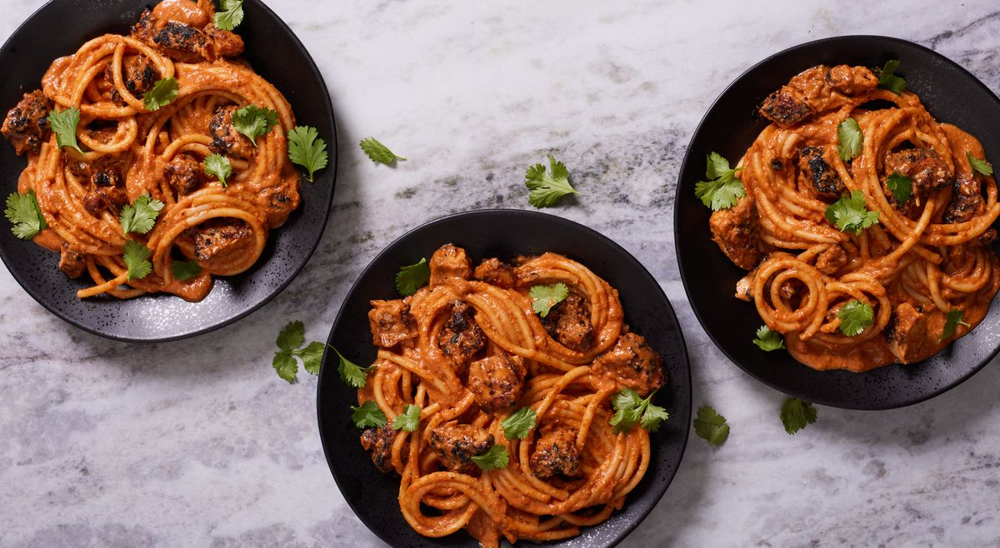

chicken

Descripcion
This recipe marries two of our favorite creamy comfort foods, spicy Chicken Tikka Masala and rich, garlicky Fettuccine Alfredo. Weirdly enough, Parmesan and curry are a pretty unbelievable pairing!
Ingredients
- 1 1/2 lb. boneless skinless chicken thighs, patted dry with a paper towel
- 1/2 c. full-fat Greek yogurt
- 3 cloves garlic, minced
- 1 tbsp. ginger, minced
- 1 1/2 tsp. garam masala
- 1/2 tsp. ground cumin
- 1/2 tsp. ground coriander
- 1/2 tsp. kosher salt
- 1/4 tsp. cayenne Cooking spray
- 1 large yellow onion, finely chopped
5 cloves garlic, minced
- 2 tbsp. fresh ginger, minced
- 1 to 2 serrano peppers, seeded, deveined, and minced
- 2 tbsp. garam masala
- 1 1/2 tsp. ground cumin
Steps
- Prepare chicken: In a large bowl, toss chicken thighs, yogurt, garlic, ginger, and spices until completely coated. Cover with plastic wrap, transfer to refrigerator, and marinate for 30 minutes or up to 2 hours.
- Meanwhile, prepare sauce: In a large, heavy-bottomed pot, melt ghee over medium-high heat. Add onions, garlic, ginger, and serrano peppers and cook, stirring occasionally, until soft and beginning to brown on the edges, 8 to 10 minutes.
- Reduce heat to medium and stir in spices. Cook until very fragrant, 2 to 3 minutes. Stir in tomato paste and cook until dark red, 2 to 3 minutes more.
- Whisk in water, ensuring there are no clumps, then add honey. Take off heat and stir in cream. Use an immersion blender or carefully pour sauce into a traditional blender and blend sauce until totally smooth. Return sauce to pot.
- Position an oven rack 5" to 6" from the broiler and heat broiler. Line a baking sheet with foil and grease with cooking spray. Transfer marinated chicken to baking sheet, ensuring some yogurt remains on chicken.
- Broil chicken, flipping once halfway through, until cooked through and charred, 18 to 20 minutes. Transfer chicken to a cutting board and let cool, then roughly chop and add to sauce.
- Meanwhile, in a large pot of boiling salted water, cook pasta until al dente according to package directions. Drain and set aside.
- Bring sauce to a bare simmer and add cooked pasta and Parmesan. Cook, tossing, until everything is heated through, about 2 minutes.